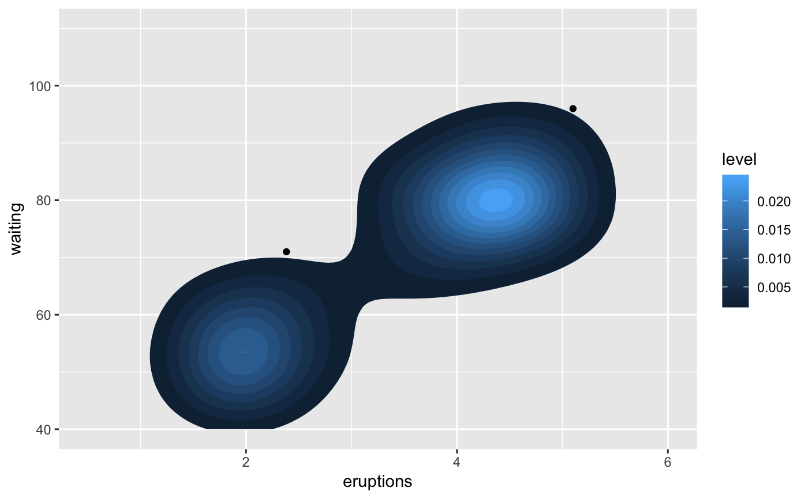
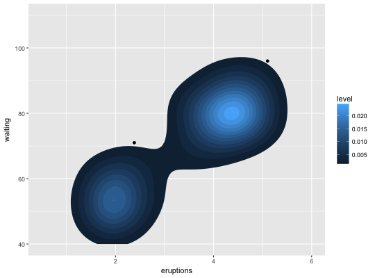
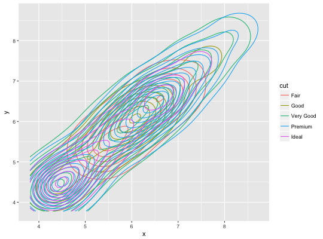
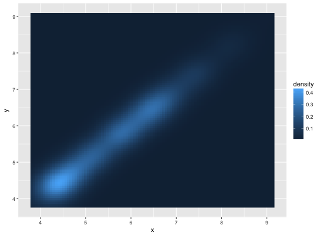
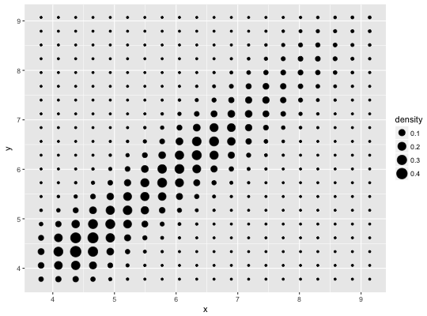

Perform a 2D kernel density estimation using kde2d and
display the results with contours. This can be useful for dealing with
overplotting. This is a 2d version of geom_density.
geom_density_2d(mapping = NULL, data = NULL, stat = "density2d", position = "identity", ..., lineend = "butt", linejoin = "round", linemitre = 1, na.rm = FALSE, show.legend = NA, inherit.aes = TRUE) stat_density_2d(mapping = NULL, data = NULL, geom = "density_2d", position = "identity", ..., contour = TRUE, n = 100, h = NULL, na.rm = FALSE, show.legend = NA, inherit.aes = TRUE)
| mapping | Set of aesthetic mappings created by |
|---|---|
| data | The data to be displayed in this layer. There are three options: If A A |
| position | Position adjustment, either as a string, or the result of a call to a position adjustment function. |
| ... | other arguments passed on to |
| lineend | Line end style (round, butt, square) |
| linejoin | Line join style (round, mitre, bevel) |
| linemitre | Line mitre limit (number greater than 1) |
| na.rm | If |
| show.legend | logical. Should this layer be included in the legends?
|
| inherit.aes | If |
| geom, stat | Use to override the default connection between
|
| contour | If |
| n | number of grid points in each direction |
| h | Bandwidth (vector of length two). If |
geom_density_2d understands the following aesthetics (required aesthetics are in bold):
x
y
alpha
colour
group
linetype
size
Same as stat_contour
geom_contour for information about how contours
are drawn; geom_bin2d for another way of dealing with
overplotting.
m <- ggplot(faithful, aes(x = eruptions, y = waiting)) + geom_point() + xlim(0.5, 6) + ylim(40, 110) m + geom_density_2d()set.seed(4393) dsmall <- diamonds[sample(nrow(diamonds), 1000), ] d <- ggplot(dsmall, aes(x, y)) # If you map an aesthetic to a categorical variable, you will get a # set of contours for each value of that variable d + geom_density_2d(aes(colour = cut))# If we turn contouring off, we can use use geoms like tiles: d + stat_density_2d(geom = "raster", aes(fill = ..density..), contour = FALSE)